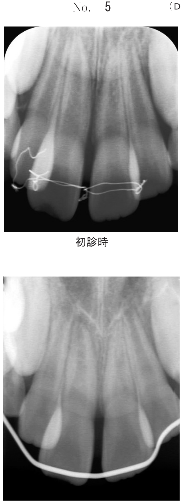
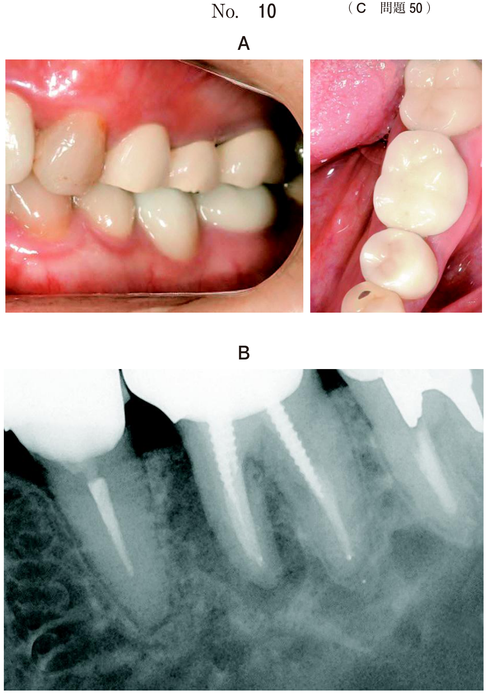
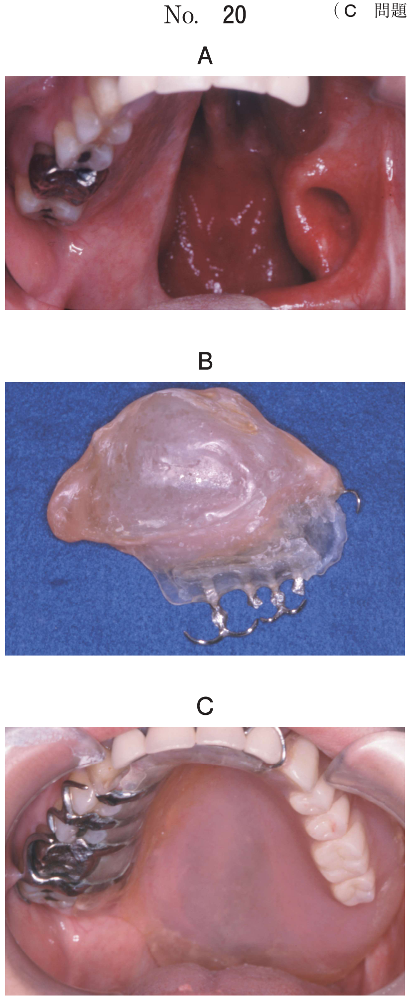
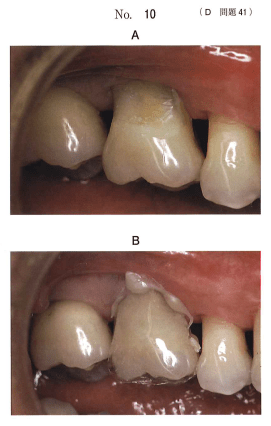
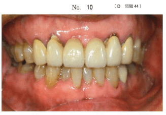
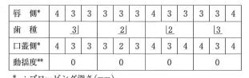
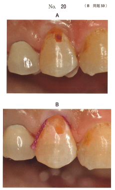

ポリアクリル酸（液）とフルオロアルミノシリケートガラス（粉）を主成分とする無機セメント。修復、合着、裏層、予防填塞など多様な目的に用いられる。
| 種類 | 組成 | 硬化機序 |
|---|---|---|
| 従来型 | 粉：フルオロアルミノシリケートガラス 液：ポリアクリル酸、酒石酸 |
酸-塩基反応 |
| レジン添加型 | 上記＋レジン成分（HEMA, UDMA） 重合開始剤（カンファーキノン） |
酸-塩基反応 ＋光重合反応 |
粉末のフルオロアルミノシリケートガラスからフッ化物イオンが徐放される。再石灰化を促進し、抗齲蝕性（耐酸性向上、細菌発育抑制）を発揮する。
リチャージ：フッ化物の局所応用でセメント内部へイオンを取り込み、溶出量を回復できる。
初期硬化段階で水が触れると硬化阻害を起こし、白濁および機械的性質の低下が生じる。硬化後も極度に乾燥すると亀裂による白濁が生じる。
→ 填塞後および硬化後にバーニッシュ塗布を行い、感水・乾燥を防止する。
液成分中のカルボキシル基によって歯質および歯科用金属に接着する。水分や汚染の存在下でも接着に問題が生じにくい。
| 性質 | 内容 |
|---|---|
| 機械的性質 | 脆性材料であり、外力の加わる部位には不適 |
| 熱膨張係数 | 約13×10⁻⁶/℃（歯質11.4×10⁻⁶/℃と近似） |
| 審美性 | 歯冠色を呈するが、コンポジットレジンに劣る |
| 歯髄為害性 | 液のpHは1〜2だが、硬化で急速に上昇。歯髄刺激性は少ない |
長所：歯質・金属との接着性、親水性で歯質となじみがよい、抗齲蝕性、再石灰化への寄与、温度変化による体積変化が小さい
短所：機械的強度が低い、審美性に劣る、硬化初期に感水性がある（従来型）、硬化後の乾燥に弱い（従来型）
| 適応症 | 禁忌症 |
|---|---|
|
|
※防湿が困難な症例、齲蝕リスクの高い患者にはGI修復を選択する場合がある
従来型では必須ではないが、処理することで接着性が向上する。
ポリアクリル酸塗布 → 水洗 → 乾燥（レジン添加型では必須）
※歯面処理で接着性・賦形性・辺縁封鎖性が向上する
治療環境・機器の制約が厳しい発展途上国などで主に応用される修復法。
ある修復材料の粉末の組成を表に示す。この材料の特徴はどれか。2つ選べ。
【解説】GIの特徴として、フッ化物徐放性と感水性（水で硬化阻害）が重要。脆性材料なので耐摩耗性は劣る。歯髄刺激性は少ない。
58歳の女性。下顎左側第一大臼歯の冷水痛を主訴として来院した。10年前に修復処置を受けたが、最近になってしみるようになったという。従来型グラスアイオノマーセメント修復を行うこととした。初診時と修復操作中の口腔内写真（別冊No.10）を別に示す。この操作の目的で正しいのはどれか。1つ選べ。

【解説】写真はバーニッシュ塗布の操作。従来型GIは初期硬化時に感水性があるため、バーニッシュを塗布して水分の接触を防ぐ。
グラスアイオノマーセメント修復の適応はどれか。3つ選べ。
【解説】GI修復の適応は3級窩洞、根面窩洞、乳臼歯の2級窩洞など。4級窩洞や咬合力のかかるアンレー窩洞は禁忌（脆性材料のため）。
非侵襲的修復技法〈ART〉で用いられるのはどれか。2つ選べ。
【解説】ART法は手用切削器具（スプーンエキスカベーター）で齲蝕除去し、従来型GIで修復する。タービンやモーターは使用しない。
従来型グラスアイオノマーセメント修復窩洞の写真（別冊No.16）を別に示す。窩洞の形態と操作の組合せで正しいのはどれか。2つ選べ。

【解説】GI修復では予防拡大は不要（接着性があるため）。便宜形態として口蓋側への開放、窩縁形態はバットジョイントが正しい。鳩尾形はアマルガム修復の保持形態。
35歳の女性。口腔清掃時に上顎右側犬歯にデンタルフロスが引っかかることを主訴として来院した。従来型グラスアイオノマーセメント修復を行うこととした。処置開始前とその後の操作過程の口腔内写真（別冊No.32A、B）を別に示す。齲蝕除去時と窩洞形成後の歯面に塗布されている材料の成分の組合せで正しいのはどれか。1つ選べ。

【解説】齲蝕検知液の成分はアシッドレッド。窩洞形成後の歯面処理にはポリアクリル酸を塗布して接着性を向上させる。
64歳の男性。上顎右側第一大臼歯の知覚過敏を主訴として来院した。ブラッシング時に一過性の痛みがあるという。検査の結果、グラスアイオノマーセメント修復を行うこととした。初診時の口腔内写真（別冊No.10A）と、ある器具を用いた修復操作中の口腔内写真（別冊No.10B）を別に示す。この操作で向上するのはどれか。3つ選べ。

【解説】歯面処理（ポリアクリル酸塗布）により接着性、賦形性、辺縁封鎖性が向上する。感水性は「向上」するものではなく欠点。イオン徐放性は歯面処理と無関係。
86歳の男性。上顎両側側切歯に歯ブラシが引っかかることを主訴として訪問歯科診療の依頼があった。③②1┴1②③ブリッジは4年前に装着されたという。3か月前に脳出血を起こし右半身が麻痺しており、日常生活は同居の家族が介助している。探針での触診で2┴2歯頸部に約2mmの段差を認めたが、健全な象牙質を触知した。初診時の口腔内写真（別冊No.10）を別に示す。歯周組織検査結果の一部を表に示す。主訴への対応で適切なのはどれか。2つ選べ。


【解説】高齢者の訪問歯科で根面の段差（根面齲蝕の初期）への対応。GI填塞は根面窩洞の適応であり、フッ化物徐放による抗齲蝕効果も期待できる。介助者への口腔清掃指導も重要。
58歳の女性。上顎右側第一小臼歯の一過性の冷水痛を主訴として来院した。検査の結果、グラスアイオノマーセメント修復を行うこととした。初診時（別冊No.20A）と窩洞形成後の口腔内写真（別冊No.20B）を別に示す。次に行うのはどれか。1つ選べ。

【解説】隣接面窩洞の形成後、填塞前にサービカルマトリックスを試適する。バーニッシュ塗布は填塞後に行う。ブロットドライはコンポジットレジン修復の操作。